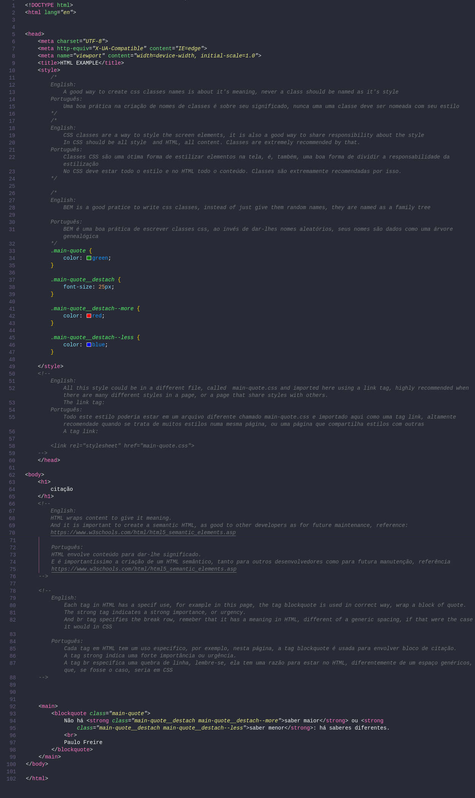
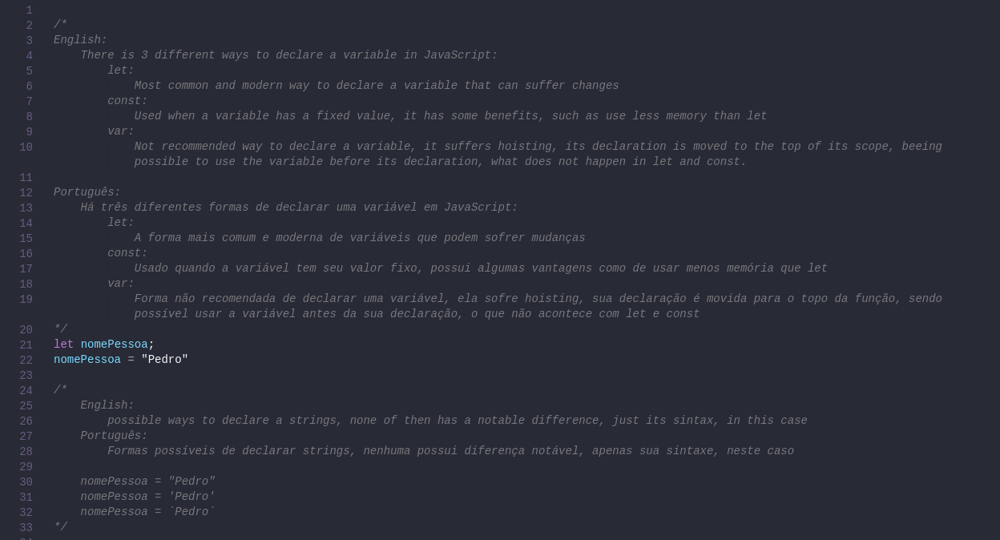

Atividade Prática
CENTRO UNIVERSITÁRIO INTERNACIONAL UNINTER ESCOLA SUPERIOR POLITÉCNICA BACHARELADO EM ENGENHARIA DE SOFTWARE FUNDAMENTOS DE DESENVOLVIMENTO DE SOFTWARE
Ryan Rodrigo Costa - 3989221
Professor(a): Luciane Kanashiro
Porto Feliz - SP (Polo Itu)
2021
1 - Conceitue corretamente Software com sua palavras e dê um exemplo de software categorizando-o de acordo com a classificação utilizada na aula 1.
Solução do aluno:
Software é uma sequência de instruções, passos, a serem interpretados e incrementados pelo computador, assim, atingindo tarefas específicas. Software, como o próprio nome sugere, é "soft" (em tradução livre: macio, ou mole), podendo ser moldado livremente para uma tarefa especíca, ou requisitos específicos e assim por diante. Ele possui três principais categorias: software de sistema, software utilitário e software aplicativo.
Software de sistema é considerado essencial para o funcionamento do computador de forma como é comumente reconhecido. É esse sistema que faz o dialogo entre usuário, aplicação e a parte mecânica do computador, ou seja, o intermediador entre software e hardware. O tão conhecido sistema operacional. Exemplos são Windows e as inúmeras distribuições Linux, como Mint, Ubuntu e PopOs
Software utilitário é qualquer programa não obrigatório para o Sistema Operacional, mas extremamente útil. São programas utilizados para suprir deficiências dos sistemas operacionais. Pode-se incluir nos utilitários programas para: compactação de dados, aumento de desempenho de máquinas, overclock, limpeza de discos rígidos, acesso à internet, partilha de conexões, etc.
Software aplicativo são programas e ferramentas tem aplicações práticas para o usuário, facilitando seu uso uso ou entregando um algo novo a ele. Sem eles uma tarefa simples como armazenar informação em um arquivo de texto seria absolutamente complexa e desgastante para o usuário leigo, incluindo ter de abrir o temido terminal de tela preta. São exemplos: Word, Excel, Power Point, navegadores e jogos. Sendo a maior parcela dos softwares
2 - Várias dimensões e fatores para qualidade de sofware foram propostas ao longo dos anos. Cite e explique um fator ou dimensão de qualidade de software diferente das apresentadas em aula.
Solução do aluno:
Como definição de qualidade de software, tem-se a seguinte afirmação: "Qualidade de software é una área do conhecimento em engenharia de software e seu objetivo é garantir a qualidade do software através da definição e normatização de processos de desenvolvimento". Várias fatores influênciam na qualidade de Software, inclusive a Portabilidade.
A portabilidade é importantissíma para o usuário, tem termos gerais, sua definição vem com uma simples pergunta: "É possível utilizar o produto em diversas plataformas com pequeno esforço de adaptação?". Imagine que o mesmo navegador que usa em seu sistema operacional Windows é completamentamente diferente em seu Linux Mint, não faria sentido para o usuário. A portabilidade se subdivide em quatro princiapais tópicos: Adaptabilidade, Capacidade para ser instalado, Conformidade e Capacidade para substituir.
Entende-se por Adaptabilidade, como a facilidade de adaptar a outros ambientes sem aplicar outras ações ou meios além dos fornecidos para esta finalidade no software considerado.
Semelhantemente a Capacidade para ser instalado é se a instalação em outros ambientes é simples.
De outra forma a Conformidade se define pelo de acordo com padrões ou convenções de portabilidade.
E a Capacidade para substituir, como o próprio nome evidencia, é a capacidade de ser substituido por outro software. Algo que não é desejado por nenhum software.
3 - “A computação em nuvem é a entrega de recursos de TI sob demanda por meio da Internet com definição de preço de pagamento conforme o uso.”
https://aws.amazon.com/pt/what-is-cloud-computing/. O que é cloud computing (computação em nuvem)? - Amazon Web Services. Acessado em 10/04/2021
Cite e descreva os modelos de computação em nuvem, quanto aos serviços que oferecem.
Solução do aluno:
Computação em Núvem, ou Cloud Computing, é o fornecimento de serviços de computação, incluindo servidores, armazenamento, bancos de dados, rede, software, análise e inteligência, pela Internet (“a nuvem”) para oferecer inovações mais rápidas, recursos flexíveis e economias de escala. Usado por pequenas e grandes empresas ao redor do mundo. Ela possui quatro modelos distintos de serviço: IaaS, PaaS, DaaS e SaaS.
IaaS, "Infrastructure as a Service", ou Infraestrutura como Serviço refere-se a serviços online que fornecem APIs de alto nível usadas para desreferenciar vários detalhes de baixo nível da infraestrutura de rede subjacente, como recursos de computação física, localização, particionamento de dados, dimensionamento, segurança, backup etc. Nos Data Center, locais onde há um grande acumulo de servidores, por parte dos provedores, são executadas máquinas virtuais como convidados. Essas máquinas virtuais, ou "Pools" são partições de um grande sistema Linux, que garante o isolamento dos usuários usando as tecnologias Linux como "namespaces" e "Cgroups". Sua capacidade é dimensionada automaticamente, o que evita o problema de provisionamento excessivo. Por outro lado os provedores de nuvem geralmente cobram serviços IaaS em uma base de computação utilitária: o custo reflete a quantidade de recursos alocados e consumidos.
PaaS, "Plataform as a Service" ou Plataforma como Serviço dá aos desenvolvedores as ferramentas necessárias para criar e hospedar aplicativos Web. Sua ideia principal é proporcionar aos usuários acesso a componentes necessários do desenvolvimento e operar rapidamente seus projetos web, sem a necessecidade de configurar ou gerenciar a infraestrutura de seus servidors, armazenamento, redes e base de dados. A definição do NIST (National Institute of Standards and Technology) de computação em nuvem define Plataforma como um serviço como: "A capacidade oferecida ao consumidor é implementar na infraestrutura em nuvem os aplicativos criados ou adquiridos ou controlados pelo consumidor criados usando linguagens de programação, bibliotecas, serviços e ferramentas suportados pelo provedor". Em termos gerais o consumidor não controla a infraestrutura, mas tem controle sobre os aplicativos implantados e possivelmente configurações para o ambiente de hospedagem.
DaaS, "Desktop as a Service" ou Área de trabalho como serviço é uma solução de "Cloud", onde a infraestrutura de desktop virtual é terceirizada para um provedor. Sua vantagem é seu modelo eficiênte no qual o provedor de serviços controla todas as responsabilidades da parte do Back-End que normalmente seriam feitos pelo software. Usa execução distribuída ou execução remota, dependendo do tipo de implementação.
SaaS - "Software as a Service" ou Software como Serviço: software como um serviço oferece um produto completo, executado e gerenciado pelo provedor de serviços. Sua oferta é não é necessário pensar sobre como o serviço é mantido ou como a infraestrutura subjacente é gerenciada, apenas precisará pensar em como usará este tipo específico de software.(p.ex.: Google Docs , Microsoft SharePoint Online);
4 - HTML é uma linguagem descritiva de hipertextos composta por tags. Hoje o HTML em sua versão mais recente combina outras tecnologias como CSS e JavaScript que complementam os hipertextos com estilo e interatividade respectivamente.” Cite duas tags html, explicando sua função.
Solução do aluno:
Tags HTML são uma forma de dar contexto e informação a texto da página, seu desenvolvimento correto traz muitos benefícios para a aplicação, como a acessibilidade para pessoas com deficiência visual e ranqueamento melhor pelos algoritmos de busca. Existem tags opostas como main e aside e head e body.
Na tag head é inserida toda a informação de metadados, como língua, titulo, links externos de estilização, a url padrão e muitos outros. Sua contraparte, o body, possui todo o conteúdo exibido para o usuário, como parágrafos, imagens, hyperlinks, tabelas e inúmeras outras.
Como filhos do body, as tags main e aside. Aside representa uma seção de uma página que consiste de conteúdo que é tangencialmente relacionado ao conteúdo do seu entorno, que poderia ser considerado separado do conteúdo. Essas seções são, muitas vezes, representadas como barras laterais. Por outro lado a tag main define o conteúdo principal dentro do body em seu documento ou aplicação. Entende-se como conteúdo principal aquele relacionado diretamente com o tópico central da página ou com a funcionalidade central da aplicação.
5 - “HTML é uma linguagem descritiva de hipertextos composta por tags. Hoje o HTML em sua versão mais recente combina outras tecnologias como CSS e JavaScript que complementam os hipertextos com estilo e interatividade respectivamente.”
Codifique uma página html com aparência semelhante a imagem abaixo. O código deve trazer também comentários com a tag específica de comentário.
Solução do aluno:
Página criada:
6 - “O Javascript é uma linguagem de programação bastante popular hoje que é utilizada em diversos contextos, desde programação de jogos até servidores. No entanto, um dos seus usos mais icônicos é associado com interação em páginas HTML no lado do cliente.”
Considerando a linguagem JavaScript, crie uma variável chamada nomePessoa eatribua o valor Pedro a ela
Solução do aluno:
